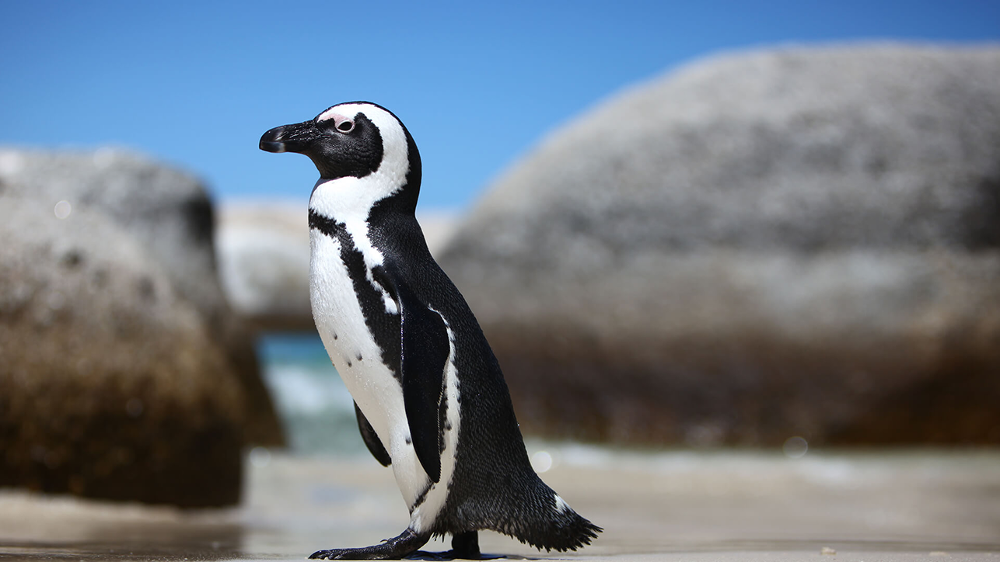
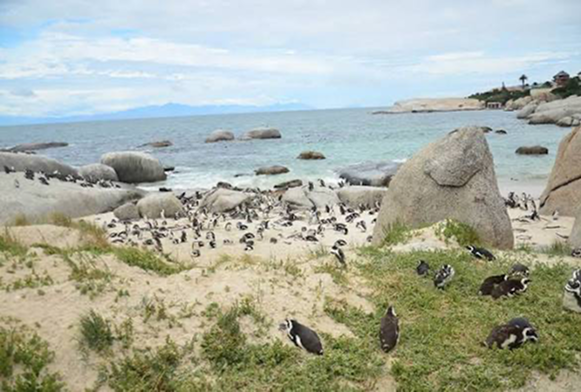
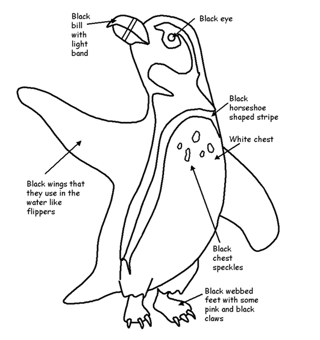
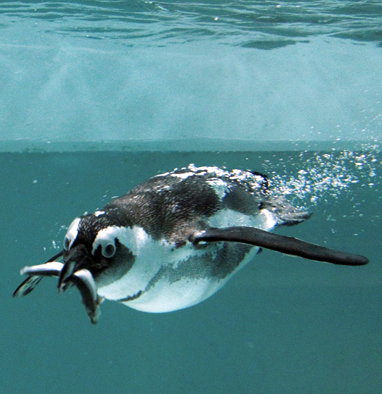
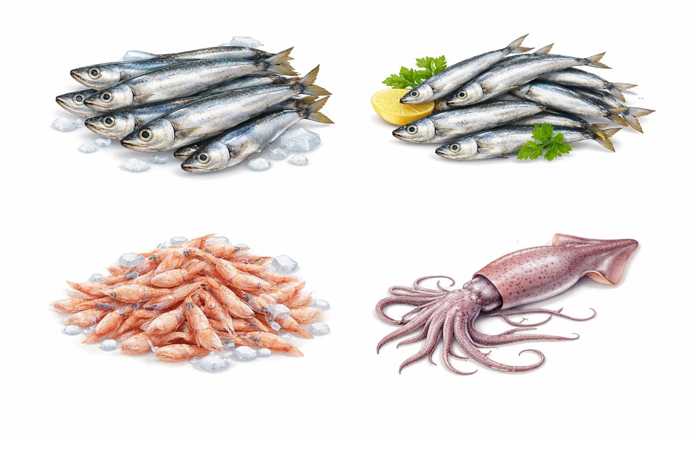

The African penguin (Spheniscus demersus), also known as Cape penguin or South African penguin, is a species of penguin confined to southern African waters. It is the only penguin found in the Old World. Like all penguins, it is flightless, with a streamlined body and wings stiffened and flattened into flippers for a marine habitat. Adults weigh an average of 2.2–3.5 kg (4.9–7.7 lb) and are 60–70 cm (24–28 in) tall. The species has distinctive pink patches of skin above the eyes and a black facial mask. The body's upper parts are black and sharply delineated from the white underparts, which are spotted and marked with a black band.
Button

African penguins inhabit the rocky, temperate coastlines and offshore islands of southwestern Africa, specifically from Namibia to Algoa Bay near Port Elizabeth, South Africa.


African penguins are carnivores that feed primarily on pelagic schooling fish, with a diet consisting mostly of sardines, anchovies, and red-eye round herrings. They also consume small crustaceans, such as krill and shrimps, along with squid. They forage in the open sea, consuming up to 540 grams of food daily, often swallowing fish whole.
